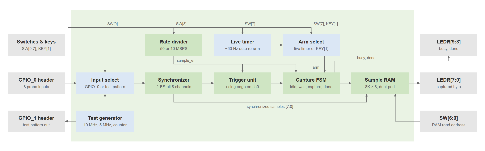
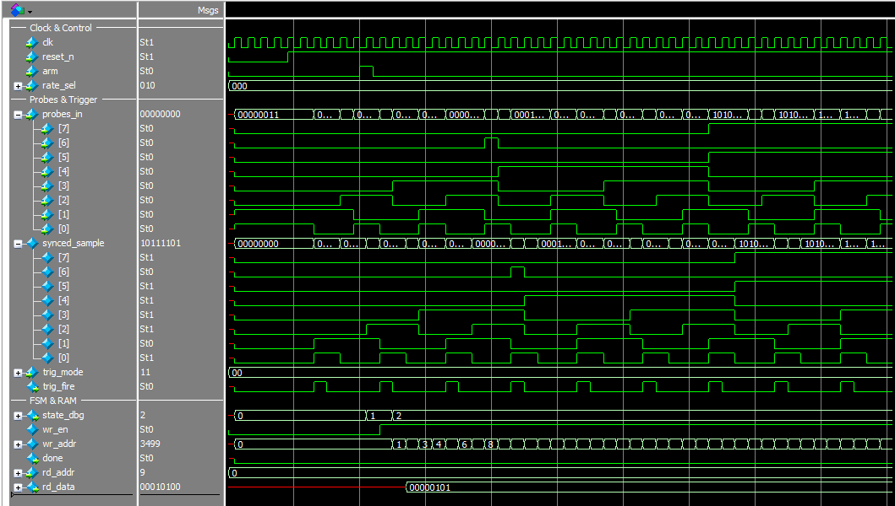

This code is for the 8-channel logic analyzer on the DE1-SoC. The VGA display and user interface are not implemented yet, so captured data is read out on the LEDs for now.
| Signal | Direction | Description |
|---|---|---|
| CLOCK_50 | Input | 50 MHz system clock driving all sequential logic |
| KEY[0] | Input | Active-low synchronous reset (reset_n) |
| KEY[1] | Input | Snapshot arm button (triggers one 8,192-sample capture when SW[7] = 0) |
| SW[9] | Input | Signal source select (1 = internal test_gen, 0 = external GPIO_0[7:0]) |
| SW[8] | Input | Sample rate select (0 = 50 MSPS, 1 = 10 MSPS) |
| SW[7] | Input | Capture mode (0 = manual Snapshot via KEY[1], 1 = ~60 Hz Live Continuous) |
| SW[6:0] | Input | 7-bit RAM read address (0..127) to inspect stored bytes |
| GPIO_0[7:0] | Input | External 8-channel digital probe inputs |
| GPIO_1[7:0] | Output | Outputs test_gen waveforms physically on Header 1 |
| LEDR[7:0] | Output | Displays the 8-bit captured byte (rd_data) stored at mem[SW[6:0]] |
| LEDR[8] / LEDR[9] | Output | Status indicators: LEDR[8] = busy, LEDR[9] = done |

